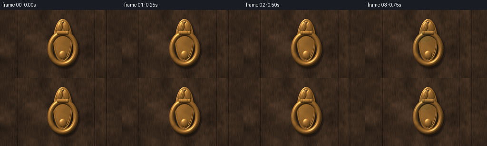
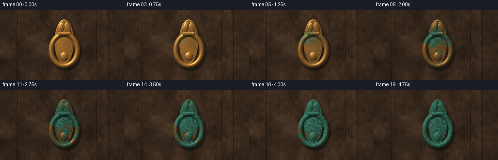
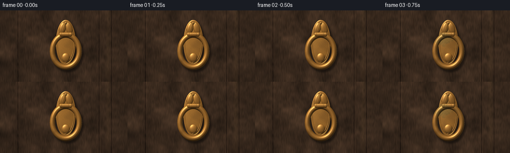
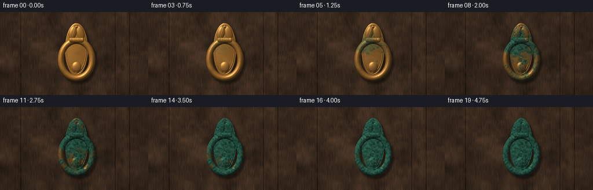

CODING AGENTS AS PIXEL WORLD MODELS
traex/GPT-6.1-Sol · material_0046
点击播放 · 原生 RGB 像素
逐轮保存的候选
回放视频、检查图与代码变化。
每份候选均可单独播放。实际图片检查记录在下方工具轨迹中。
候选 01播放与检查图
点击播放 · 原生 RGB 像素


展开代码变化
--- 上一保存版本
+++ 本次保存版本
@@ -0,0 +1,196 @@
+from pathlib import Path
+import numpy as np
+from PIL import Image, ImageDraw, ImageFilter
+from scipy.ndimage import gaussian_filter, shift
+import artifact_io
+
+ROOT=Path(__file__).resolve().parent
+W,H=256,144
+S=3
+w,h=W*S,H*S
+rng=np.random.default_rng(824)
+y,x=np.mgrid[0:h,0:w].astype(float)/S
+
+# All scene surfaces are analytic reliefs and shaded directly, without a renderer.
+def noise(scale,seed):
+ rr=np.random.default_rng(seed)
+ a=rr.standard_normal((max(2,int(h/scale)+2),max(2,int(w/scale)+2))).astype('float32')
+ a=np.asarray(Image.fromarray(a,mode='F').resize((w,h),Image.Resampling.BICUBIC))
+ return (a-a.mean())/(a.std()+1e-6)
+
+broad=noise(90,1); medium=noise(25,2); small=noise(7,3); fine=noise(2,4)
+patina_field=.59*broad+.37*medium+.23*small+.07*fine
+micro=rng.normal(size=(h,w))
+# A near-frontal macro photograph of old, deep walnut vertical door panels.
+grainwarp=3*np.sin(y/26)+1.2*np.sin(y/8+x*.04)
+gr=np.sin((x+grainwarp)*3.9)+.4*np.sin((x+grainwarp)*10.2)
+fib=noise(2,7)
+fib=gaussian_filter(fib,(7,.3)); fib/=fib.std()
+woodval=1+.115*gr+.06*fib+.095*broad
+wood=np.stack([59*woodval,43*woodval,31*woodval],axis=-1)
+wood+=np.stack([3*medium,2*medium,1.5*medium],-1)
+# Raised moulding out toward the edges of the crop, and plank join on the right.
+for xx in [36,199,224]:
+ wood-=np.exp(-((x-xx)/.9)**2)[...,None]*np.array([22,17,12])
+ wood+=np.exp(-((x-xx-1.3)/.7)**2)[...,None]*np.array([8,6,4])
+wood+=np.exp(-((x-217)/4)**2)[...,None]*np.array([8,6,3])
+# small elongated pores and longitudinal wood fissures
+for _ in range(110):
+ xx=rng.uniform(0,W); yy=rng.uniform(0,H); ll=rng.uniform(2,21)
+ strength=rng.uniform(2,10)
+ wood-=np.exp(-((x-xx-.22*np.sin(y*.1))/.22)**2-((y-yy)/ll)**6)[...,None]*strength
+wood=gaussian_filter(wood,(.55,.55,0))
+# Each bronze piece has its own raised depth surface and normals.
+objects=[]
+def put(mask,z,kind='bronze',normal=None,shade=1):
+ if normal is None:
+ zy,zx=np.gradient(z,1/S,1/S)
+ normal=np.stack([-zx,-zy,np.ones_like(x)],-1)
+ normal/=np.linalg.norm(normal,axis=-1)[...,None]
+ objects.append(dict(mask=mask,z=z,n=normal,kind=kind,shade=shade))
+
+cx=132.
+# The heavy oval escutcheon, rounded bevel with engraved concentric border.
+q=np.sqrt(((x-cx)/20.0)**2+((y-65)/46)**2)
+mask=q<=1
+z=1.6+2.6*np.sqrt(np.maximum(0,1-q*q))
+z+=.33*np.exp(-((q-.84)/.023)**2)-.45*np.exp(-((q-.90)/.016)**2)
+put(mask,z)
+# Relief leaves around the hinge, carved, not a separate flat mark.
+for side in [-1,1]:
+ xx=cx+side*7
+ xxloc=(x-xx)-side*(y-39)*.18
+ q2=(xxloc/7)**2+((y-36)/12)**2
+ zz=3+3.0*np.sqrt(np.maximum(0,1-q2))
+ zz-=.26*np.exp(-((xxloc-side*(y-36)*.12)/.3)**2)
+ put(q2<1,zz)
+# Round screw heads above and below, with recessed slots.
+for cy in [26,104]:
+ rr=np.sqrt((x-cx)**2+(y-cy)**2)
+ zz=4.2+1.0*np.sqrt(np.maximum(0,1-(rr/2.7)**2))
+ put(rr<2.7,zz)
+ # Physical darker inset slit, tilted slightly.
+ ax=(x-cx)*.93+(y-cy)*.36
+ ay=-(x-cx)*.36+(y-cy)*.93
+ put((abs(ax)<2)&(abs(ay)<.28),zz+.02,kind='groove')
+# Small protruding strike boss inside lower ring.
+rr=np.sqrt(((x-cx)/8.2)**2+((y-95)/9.2)**2)
+put(rr<1,3.8+3*np.sqrt(np.maximum(0,1-rr*rr)))
+# A solid, forged oval ring held by the upper knuckle.
+# Closest point on an elliptical center line, computed by Newton iterations.
+a,b=27.,32.5
+cy=82.
+theta=np.arctan2((y-cy)/b,(x-cx)/a)
+for _ in range(6):
+ co,si=np.cos(theta),np.sin(theta)
+ ex,ey=cx+a*co,cy+b*si
+ dx,dy=ex-x,ey-y
+ f=dx*(-a*si)+dy*(b*co)
+ df=(a*si)**2+(b*co)**2+dx*(-a*co)+dy*(-b*si)
+ theta-=np.clip(f/(df+1e-9),-.15,.15)
+co,si=np.cos(theta),np.sin(theta)
+ex,ey=cx+a*co,cy+b*si
+dx,dy=x-ex,y-ey
+d=np.sqrt(dx*dx+dy*dy)
+tube=5.35+.3*np.sin(theta)**2
+zz=8.1+np.sqrt(np.maximum(0,tube*tube-d*d))
+# round tube's analytic normal, in orthographic projection
+nr=np.stack([dx/tube,dy/tube,np.sqrt(np.maximum(0,1-(d/tube)**2))],-1)
+# Slight old forged facets / hairline annular indentations at either shoulder.
+zz-=.15*np.exp(-((theta+.78)/.03)**2)
+put(d<tube,zz,normal=nr)
+# Hinge casting across the top of the ring.
+dx2=x-cx; dy2=y-48.5
+zz=12.5+2.7*np.sqrt(np.maximum(0,1-(dy2/4.3)**2))
+zz-=.32*(np.exp(-((dx2-7)/.35)**2)+np.exp(-((dx2+7)/.35)**2))
+put((abs(dx2)<11.0)&(abs(dy2)<4.3),zz)
+# Rounded hinge end caps.
+for xx in [cx-11,cx+11]:
+ qq=((x-xx)/1.8)**2+((y-48.5)/4.3)**2
+ put(qq<1,12.5+2.3*np.sqrt(np.maximum(0,1-qq)))
+
+# Resolve the visible surfaces once; time changes their chemistry, not geometry.
+depth=np.zeros((h,w)); normals=np.zeros((h,w,3)); kind=np.zeros((h,w),int)
+for o in objects:
+ visible=o['mask']&(o['z']>depth)
+ depth[visible]=o['z'][visible]
+ normals[visible]=o['n'][visible]
+ kind[visible]=2 if o['kind']=='groove' else 1
+metal=kind>0
+# Wood receives displaced, softened shadows; fixed camera and fixed mounting.
+sh=gaussian_filter(shift(metal.astype(float),(5*S,4*S),order=1),1.7*S)
+wood*=1-.46*sh[...,None]
+# Fine old scratches, concentrated near the ring ridges; subordinate to patina.
+scratches=np.zeros((h,w))
+for i in range(90):
+ sx=rng.uniform(96,164); sy=rng.uniform(22,121)
+ ang=rng.uniform(-.65,.65); ln=rng.uniform(.8,4)
+ xx=(x-sx)*np.cos(ang)+(y-sy)*np.sin(ang)
+ yy=-(x-sx)*np.sin(ang)+(y-sy)*np.cos(ang)
+ scratches+=np.exp(-(xx/ln)**8-(yy/.09)**2)*rng.uniform(.015,.07)
+
+# Rain runnels on the door, slowly emerge along the mount's bottom edge.
+runnels=np.zeros((h,w))
+for rx in [115,124,136,143,151]:
+ runnels+=np.exp(-((x-rx-.4*np.sin(y*.17))/1.0)**2)*np.clip((y-101)/25,0,1)
+
+frames=[]
+for i in range(20):
+ t=i/19
+ # Broad environmental light shifts as many seasons pass, without flicker.
+ daylight=.96+.045*np.sin(t*3*np.pi)
+ base=wood.copy()*daylight
+ base-=runnels[...,None]*(t**1.5)*np.array([5,4,2])
+ # Oxide starts in damp pits, recesses and lower surfaces and grows outward.
+ pocket=np.clip((1-normals[:,:,2]),0,1)*.26
+ lower=.16*np.clip((y-50)/70,0,1)
+ seed=patina_field+.1*medium+lower+pocket
+ onset=.43+.21*seed
+ # patina growth remains spatially coherent throughout the timelapse.
+ green=1/(1+np.exp(-14*(t-onset)))
+ green*=np.clip((t-.10)/.35,0,1)
+ green=np.clip(green,0,.97)
+ # golden brass -> dark oxidized bronze -> mottled blue-green copper salts
+ tarnish=np.clip(t*1.45+.08*medium,0,1)
+ initial=np.array([173.,113.,43.])
+ dark=np.array([70.,47.,26.])
+ substrate=initial[None,None,:]*(1-.65*tarnish[...,None])+dark[None,None,:]*(.65*tarnish[...,None])
+ pat=np.stack([44+7*small+4*fine,100+12*small+5*fine,81+11*small+4*fine],-1)
+ pat=np.clip(pat,12,145)
+ albedo=substrate*(1-green[...,None])+pat*green[...,None]
+ rough=.30+.35*t+.30*green
+ # Diffuse daylight and a broad bright sky reflected on the curvature.
+ light=np.array([-.46,-.65,.64]); light/=np.linalg.norm(light)
+ dot=np.clip(np.sum(normals*light,axis=-1),0,1)
+ shade=.28+.76*dot
+ # A warm low bounce from the door, and an ambient blue sky fill.
+ shade+=.10*np.clip(normals[:,:,0],0,1)
+ rgb=albedo*shade[...,None]
+ half=light+np.array([0,0,1]); half/=np.linalg.norm(half)
+ nh=np.clip(np.sum(normals*half,axis=-1),0,1)
+ # Specular highlights shrink in intensity and broaden as the oxide thickens.
+ spec=nh**(34-15*t)
+ strength=(1-green)**1.7*(1-.47*t)
+ rgb+=spec[...,None]*strength[...,None]*np.array([156,131,88])
+ rgb+=nh[...,None]**4*strength[...,None]*np.array([24,20,14])
+ # Thin reflected sky band on the right rim; not a graphic outline.
+ edge=np.clip(normals[:,:,0],0,1)**8
+ rgb+=edge[...,None]*(1-green[...,None])*.6*np.array([55,55,43])
+ # Tiny grain, corrosion pits, warm metal peeking through green mineral crust.
+ rgb*=(1+.024*micro+.035*fine*(.3+green))[...,None]
+ rgb+=scratches[...,None]*np.array([95,78,47])*(1-green[...,None])
+ rgb[kind==2]*=.26
+ base[metal]=rgb[metal]*daylight
+ # A few understated damp episodes: tiny beads on the exposed metal.
+ wet=.12*np.exp(-((t-.32)/.055)**2)+.15*np.exp(-((t-.67)/.06)**2)
+ if wet>.003:
+ drops=(np.maximum(0,fine-1.5)**3)*metal
+ base+=drops[...,None]*wet*np.array([20,23,24])
+ # Optical falloff from the close-up lens, with fine photographic grain.
+ vignette=1-.18*((x-128)/165)**2-.08*((y-72)/110)**2
+ base*=vignette[...,None]
+ base=np.clip(base,0,255)
+ out=Image.fromarray(np.uint8(base)).resize((W,H),Image.Resampling.LANCZOS)
+ frames.append(np.asarray(out))
+artifact_io.save(np.stack(frames).astype(np.uint8),ROOT)
+print('Generated 20 RGB frames and output artifacts.')
候选 02播放与检查图
点击播放 · 原生 RGB 像素


展开代码变化
--- 上一保存版本
+++ 本次保存版本
@@ -15,7 +15,7 @@
def noise(scale,seed):
rr=np.random.default_rng(seed)
a=rr.standard_normal((max(2,int(h/scale)+2),max(2,int(w/scale)+2))).astype('float32')
- a=np.asarray(Image.fromarray(a,mode='F').resize((w,h),Image.Resampling.BICUBIC))
+ a=np.asarray(Image.fromarray(a).resize((w,h),Image.Resampling.BICUBIC))
return (a-a.mean())/(a.std()+1e-6)
broad=noise(90,1); medium=noise(25,2); small=noise(7,3); fine=noise(2,4)
@@ -145,7 +145,7 @@
pocket=np.clip((1-normals[:,:,2]),0,1)*.26
lower=.16*np.clip((y-50)/70,0,1)
seed=patina_field+.1*medium+lower+pocket
- onset=.43+.21*seed
+ onset=.49+.26*seed
# patina growth remains spatially coherent throughout the timelapse.
green=1/(1+np.exp(-14*(t-onset)))
green*=np.clip((t-.10)/.35,0,1)
@@ -155,7 +155,7 @@
initial=np.array([173.,113.,43.])
dark=np.array([70.,47.,26.])
substrate=initial[None,None,:]*(1-.65*tarnish[...,None])+dark[None,None,:]*(.65*tarnish[...,None])
- pat=np.stack([44+7*small+4*fine,100+12*small+5*fine,81+11*small+4*fine],-1)
+ pat=np.stack([51+7*small+4*fine,110+12*small+5*fine,89+11*small+4*fine],-1)
pat=np.clip(pat,12,145)
albedo=substrate*(1-green[...,None])+pat*green[...,None]
rough=.30+.35*t+.30*green
@@ -173,6 +173,11 @@
strength=(1-green)**1.7*(1-.47*t)
rgb+=spec[...,None]*strength[...,None]*np.array([156,131,88])
rgb+=nh[...,None]**4*strength[...,None]*np.array([24,20,14])
+ # Broad, subdued reflection survives on the now-rough mineral surface.
+ rgb+=(nh**7*green)[...,None]*np.array([16,24,23])
+ # Sheltered pinpoint areas retain old bronze beneath the porous crust.
+ warm_specks=np.clip((fine-1.6)*.08,0,.10)*green
+ rgb=rgb*(1-warm_specks[...,None])+substrate*shade[...,None]*warm_specks[...,None]
# Thin reflected sky band on the right rim; not a graphic outline.
edge=np.clip(normals[:,:,0],0,1)**8
rgb+=edge[...,None]*(1-green[...,None])*.6*np.array([55,55,43])
可观测工具轨迹
实际执行的命令与返回图片。
命令 1exit 0
/bin/bash -lc "ls -la && cat prompt.txt && printf '\\n---RULES---\\n' && cat GENERATION_RULES.md && printf '\\n---SPEC---\\n' && cat task_spec.json"
命令 2exit 0
/bin/bash -lc "cat artifact_io.py && python - <<'PY' import importlib.util for n in ['numpy','PIL','scipy']: print(n, bool(importlib.util.find_spec(n))) PY"
命令 3exit 0
/bin/bash -lc "cat > generate.py <<'PY'
from pathlib import Path
import numpy as np
from PIL import Image, ImageDraw, ImageFilter
from scipy.ndimage import gaussian_filter, shift
import artifact_io
ROOT=Path(__file__).resolve().parent
W,H=256,144
S=3
w,h=W*S,H*S
rng=np.random.default_rng(824)
y,x=np.mgrid[0:h,0:w].astype(float)/S
# All scene surfaces are analytic reliefs and shaded directly, without a renderer.
def noise(scale,seed):
rr=np.random.default_rng(seed)
a=rr.standard_normal((max(2,int(h/scale)+2),max(2,int(w/scale)+2))).astype('float32')
a=np.asarray(Image.fromarray(a,mode='F').resize((w,h),Image.Resampling.BICUBIC))
return (a-a.mean())/(a.std()+1e-6)
broad=noise(90,1); medium=noise(25,2); small=noise(7,3); fine=noise(2,4)
patina_field=.59*broad+.37*medium+.23*small+.07*fine
micro=rng.normal(size=(h,w))
# A near-frontal macro photograph of old, deep walnut vertical door panels.
grainwarp=3*np.sin(y/26)+1.2*np.sin(y/8+x*.04)
gr=np.sin((x+grainwarp)*3.9)+.4*np.sin((x+grainwarp)*10.2)
fib=noise(2,7)
fib=gaussian_filter(fib,(7,.3)); fib/=fib.std()
woodval=1+.115*gr+.06*fib+.095*broad
wood=np.stack([59*woodval,43*woodval,31*woodval],axis=-1)
wood+=np.stack([3*medium,2*medium,1.5*medium],-1)
# Raised moulding out toward the edges of the crop, and plank join on the right.
for xx in [36,199,224]:
wood-=np.exp(-((x-xx)/.9)**2)[...,None]*np.array([22,17,12])
wood+=np.exp(-((x-xx-1.3)/.7)**2)[...,None]*np.array([8,6,4])
wood+=np.exp(-((x-217)/4)**2)[...,None]*np.array([8,6,3])
# small elongated pores and longitudinal wood fissures
for _ in range(110):
xx=rng.uniform(0,W); yy=rng.uniform(0,H); ll=rng.uniform(2,21)
strength=rng.uniform(2,10)
wood-=np.exp(-((x-xx-.22*np.sin(y*.1))/.22)**2-((y-yy)/ll)**6)[...,None]*strength
wood=gaussian_filter(wood,(.55,.55,0))
# Each bronze piece has its own raised depth surface and normals.
objects=[]
def put(mask,z,kind='bronze',normal=None,shade=1):
if normal is None:
zy,zx=np.gradient(z,1/S,1/S)
normal=np.stack([-zx,-zy,np.ones_like(x)],-1)
normal/=np.linalg.norm(normal,axis=-1)[...,None]
objects.append(dict(mask=mask,z=z,n=normal,kind=kind,shade=shade))
cx=132.
# The heavy oval escutcheon, rounded bevel with engraved concentric border.
q=np.sqrt(((x-cx)/20.0)**2+((y-65)/46)**2)
mask=q<=1
z=1.6+2.6*np.sqrt(np.maximum(0,1-q*q))
z+=.33*np.exp(-((q-.84)/.023)**2)-.45*np.exp(-((q-.90)/.016)**2)
put(mask,z)
# Relief leaves around the hinge, carved, not a separate flat mark.
for side in [-1,1]:
xx=cx+side*7
xxloc=(x-xx)-side*(y-39)*.18
q2=(xxloc/7)**2+((y-36)/12)**2
zz=3+3.0*np.sqrt(np.maximum(0,1-q2))
zz-=.26*np.exp(-((xxloc-side*(y-36)*.12)/.3)**2)
put(q2<1,zz)
# Round screw heads above and below, with recessed slots.
for cy in [26,104]:
rr=np.sqrt((x-cx)**2+(y-cy)**2)
zz=4.2+1.0*np.sqrt(np.maximum(0,1-(rr/2.7)**2))
put(rr<2.7,zz)
# Physical darker inset slit, tilted slightly.
ax=(x-cx)*.93+(y-cy)*.36
ay=-(x-cx)*.36+(y-cy)*.93
put((abs(ax)<2)&(abs(ay)<.28),zz+.02,kind='groove')
# Small protruding strike boss inside lower ring.
rr=np.sqrt(((x-cx)/8.2)**2+((y-95)/9.2)**2)
put(rr<1,3.8+3*np.sqrt(np.maximum(0,1-rr*rr)))
# A solid, forged oval ring held by the upper knuckle.
# Closest point on an elliptical center line, computed by Newton iterations.
a,b=27.,32.5
cy=82.
theta=np.arctan2((y-cy)/b,(x-cx)/a)
for _ in range(6):
co,si=np.cos(theta),np.sin(theta)
ex,ey=cx+a*co,cy+b*si
dx,dy=ex-x,ey-y
f=dx*(-a*si)+dy*(b*co)
df=(a*si)**2+(b*co)**2+dx*(-a*co)+dy*(-b*si)
theta-=np.clip(f/(df+1e-9),-.15,.15)
co,si=np.cos(theta),np.sin(theta)
ex,ey=cx+a*co,cy+b*si
dx,dy=x-ex,y-ey
d=np.sqrt(dx*dx+dy*dy)
tube=5.35+.3*np.sin(theta)**2
zz=8.1+np.sqrt(np.maximum(0,tube*tube-d*d))
# round tube's analytic normal, in orthographic projection
nr=np.stack([dx/tube,dy/tube,np.sqrt(np.maximum(0,1-(d/tube)**2))],-1)
# Slight old forged facets / hairline annular indentations at either shoulder.
zz-=.15*np.exp(-((theta+.78)/.03)**2)
put(d<tube,zz,normal=nr)
# Hinge casting across the top of the ring.
dx2=x-cx; dy2=y-48.5
zz=12.5+2.7*np.sqrt(np.maximum(0,1-(dy2/4.3)**2))
zz-=.32*(np.exp(-((dx2-7)/.35)**2)+np.exp(-((dx2+7)/.35)**2))
put((abs(dx2)<11.0)&(abs(dy2)<4.3),zz)
# Rounded hinge end caps.
for xx in [cx-11,cx+11]:
qq=((x-xx)/1.8)**2+((y-48.5)/4.3)**2
put(qq<1,12.5+2.3*np.sqrt(np.maximum(0,1-qq)))
# Resolve the visible surfaces once; time changes their chemistry, not geometry.
depth=np.zeros((h,w)); normals=np.zeros((h,w,3)); kind=np.zeros((h,w),int)
for o in objects:
visible=o['mask']&(o['z']>depth)
depth[visible]=o['z'][visible]
normals[visible]=o['n'][visible]
kind[visible]=2 if o['kind']=='groove' else 1
metal=kind>0
# Wood receives displaced, softened shadows; fixed camera and fixed mounting.
sh=gaussian_filter(shift(metal.astype(float),(5*S,4*S),order=1),1.7*S)
wood*=1-.46*sh[...,None]
# Fine old scratches, concentrated near the ring ridges; subordinate to patina.
scratches=np.zeros((h,w))
for i in range(90):
sx=rng.uniform(96,164); sy=rng.uniform(22,121)
ang=rng.uniform(-.65,.65); ln=rng.uniform(.8,4)
xx=(x-sx)*np.cos(ang)+(y-sy)*np.sin(ang)
yy=-(x-sx)*np.sin(ang)+(y-sy)*np.cos(ang)
scratches+=np.exp(-(xx/ln)**8-(yy/.09)**2)*rng.uniform(.015,.07)
# Rain runnels on the door, slowly emerge along the mount's bottom edge.
runnels=np.zeros((h,w))
for rx in [115,124,136,143,151]:
runnels+=np.exp(-((x-rx-.4*np.sin(y*.17))/1.0)**2)*np.clip((y-101)/25,0,1)
frames=[]
for i in range(20):
t=i/19
# Broad environmental light shifts as many seasons pass, without flicker.
daylight=.96+.045*np.sin(t*3*np.pi)
base=wood.copy()*daylight
base-=runnels[...,None]*(t**1.5)*np.array([5,4,2])
# Oxide starts in damp pits, recesses and lower surfaces and grows outward.
pocket=np.clip((1-normals[:,:,2]),0,1)*.26
lower=.16*np.clip((y-50)/70,0,1)
seed=patina_field+.1*medium+lower+pocket
onset=.43+.21*seed
# patina growth remains spatially coherent throughout the timelapse.
green=1/(1+np.exp(-14*(t-onset)))
green*=np.clip((t-.10)/.35,0,1)
green=np.clip(green,0,.97)
# golden brass -> dark oxidized bronze -> mottled blue-green copper salts
tarnish=np.clip(t*1.45+.08*medium,0,1)
initial=np.array([173.,113.,43.])
dark=np.array([70.,47.,26.])
substrate=initial[None,None,:]*(1-.65*tarnish[...,None])+dark[None,None,:]*(.65*tarnish[...,None])
pat=np.stack([44+7*small+4*fine,100+12*small+5*fine,81+11*small+4*fine],-1)
pat=np.clip(pat,12,145)
albedo=substrate*(1-green[...,None])+pat*green[...,None]
rough=.30+.35*t+.30*green
# Diffuse daylight and a broad bright sky reflected on the curvature.
light=np.array([-.46,-.65,.64]); light/=np.linalg.norm(light)
dot=np.clip(np.sum(normals*light,axis=-1),0,1)
shade=.28+.76*dot
# A warm low bounce from the door, and an ambient blue sky fill.
shade+=.10*np.clip(normals[:,:,0],0,1)
rgb=albedo*shade[...,None]
half=light+np.array([0,0,1]); half/=np.linalg.norm(half)
nh=np.clip(np.sum(normals*half,axis=-1),0,1)
# Specular highlights shrink in intensity and broaden as the oxide thickens.
spec=nh**(34-15*t)
strength=(1-green)**1.7*(1-.47*t)
rgb+=spec[...,None]*strength[...,None]*np.array([156,131,88])
rgb+=nh[...,None]**4*strength[...,None]*np.array([24,20,14])
# Thin reflected sky band on the right rim; not a graphic outline.
edge=np.clip(normals[:,:,0],0,1)**8
rgb+=edge[...,None]*(1-green[...,None])*.6*np.array([55,55,43])
# Tiny grain, corrosion pits, warm metal peeking through green mineral crust.
rgb*=(1+.024*micro+.035*fine*(.3+green))[...,None]
rgb+=scratches[...,None]*np.array([95,78,47])*(1-green[...,None])
rgb[kind==2]*=.26
base[metal]=rgb[metal]*daylight
# A few understated damp episodes: tiny beads on the exposed metal.
wet=.12*np.exp(-((t-.32)/.055)**2)+.15*np.exp(-((t-.67)/.06)**2)
if wet>.003:
drops=(np.maximum(0,fine-1.5)**3)*metal
base+=drops[...,None]*wet*np.array([20,23,24])
# Optical falloff from the close-up lens, with fine photographic grain.
vignette=1-.18*((x-128)/165)**2-.08*((y-72)/110)**2
base*=vignette[...,None]
base=np.clip(base,0,255)
out=Image.fromarray(np.uint8(base)).resize((W,H),Image.Resampling.LANCZOS)
frames.append(np.asarray(out))
artifact_io.save(np.stack(frames).astype(np.uint8),ROOT)
print('Generated 20 RGB frames and output artifacts.')
PY
python generate.py"命令 4exit 0
/bin/bash -lc "python - <<'PY'
p='generate.py'
s=open(p).read().replace(\"Image.fromarray(a,mode='F')\",\"Image.fromarray(a)\")
s=s.replace('onset=.43+.21*seed','onset=.49+.26*seed')
s=s.replace('44+7*small+4*fine,100+12*small+5*fine,81+11*small+4*fine','51+7*small+4*fine,110+12*small+5*fine,89+11*small+4*fine')
s=s.replace('rgb+=nh[...,None]**4*strength[...,None]*np.array([24,20,14])','rgb+=nh[...,None]**4*strength[...,None]*np.array([24,20,14])\\n # Broad, subdued reflection survives on the now-rough mineral surface.\\n rgb+=(nh**7*green)[...,None]*np.array([16,24,23])\\n # Sheltered pinpoint areas retain old bronze beneath the porous crust.\\n warm_specks=np.clip((fine-1.6)*.08,0,.10)*green\\n rgb=rgb*(1-warm_specks[...,None])+substrate*shade[...,None]*warm_specks[...,None]')
open(p,'w').write(s)
PY
python generate.py"命令 5exit 0
/bin/bash -lc "ls -lh pixels.npz index.html generate.py inspection.png && python - <<'PY'
import numpy as np
from PIL import Image
p=np.load('pixels.npz')['pixels']
print('Packed tensor:', p.shape)
print('RGB frames:', len(__import__('glob').glob('frames/*.png')), Image.open('frames/19.png').mode)
PY"视觉工具实际返回图片 1

保存候选 2 份；完成命令 5 次；可验证图片返回 1 张。原始 API 响应与完整日志保留在本地。